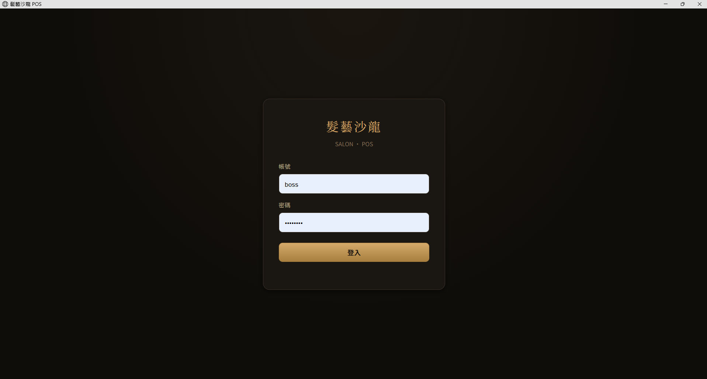
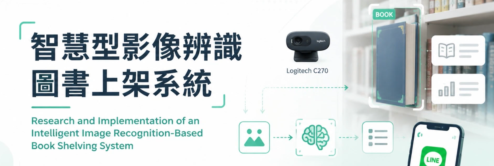

關於我
現場硬功夫,加上系統整合能力
高職電機科畢業,學生時期擔任校隊工業配線競賽選手,熟悉三菱 GX Works3 階梯圖程式與現場配線實務;之後完成資訊工程相關碩士學位,主修軟硬體整合。
目前任職於電力機械器材製造修配業,負責依電氣圖面進行控制盤配線、電控元件裝配與現場除錯。工作之外,我獨立設計並開發完整的商用管理系統,並將碩士專題延伸為結合感測器、影像辨識、機器人控制與雲端服務的軟硬整合實作。
我重視的是能發揮「現場電控」與「系統整合」這兩種能力的機會——無論是需要輪班的廠內設備工程師,或是日班的自動化整合、機電整合職位,只要用得上這兩種能力,我都願意考慮。
技能
電控現場 × 軟體整合
兩條技能線各自扎實,交集的地方就是我的優勢。
電控 / 現場實務
軟體 / 系統整合
證照
技術能力認證
乙級 變壓器裝修 技術士證
丙級 工業配線 技術士證
丙級 變壓器裝修 技術士證
專業級 PCB 電路板設計 國際能力認證
TQC+ 基礎程式語言 Python 3
TQC Excel 2019
TQC Word 2019
作品
代表作品
一套是已交付商用、即將於實體門市試營運的完整產品;一份是求學階段獨立完成的軟硬整合研究專題;另一項則是現職上獨立完成過最複雜的配電盤案例。
商用產品 · 2026/08 試營運
髮藝沙龍 POS 管理系統
獨立設計並開發的美髮門市管理系統,涵蓋顧客資料、業績抽成、庫存、營業額統計,並依「老闆／設計師」分層設計權限畫面,含老闆手機遠端看店功能。
- 授權金鑰機制,防止未授權複製
- 開機自我修復與多重自動備份
- 老闆手機遠端查看店內營運狀況

碩士專題研究
智慧型影像辨識圖書上架系統
不需為書籍加裝任何標籤,結合 Logitech 攝影機 OCR 影像辨識與 Levenshtein 模糊比對、ESP32 紅外線格位感測、LEGO EV3Dev 機器人取放控制、LINE Bot 查詢介面與雲端資料庫的軟硬整合研究專題,累積 2,723 筆實驗數據驗證。
- OpenCV 前處理(CLAHE、去歪斜校正)+ Tesseract OCR + 模糊比對
- EV3Dev 機器人自動取放、LINE Bot 五指令查詢
- 單一資料表旗標接力,四端鬆耦合即時同步

現職代表案例
交替水位控制盤
公司承接的水位交替啟動控制盤專案,兩面盤(A盤／B盤)、四顆軟啟動器控制四顆抽水馬達,依電氣單線圖與控制圖完成元器件佈置與配線施工,是我目前獨立完成過最複雜的配電盤案例。
- OMRON 61F-G4 水位偵測 + 61F-11 繼電器
- SMC 軟啟動器 ×4,控制四顆抽水馬達
- 單線圖／控制圖判讀 + 銅排配線 + 送電前測試